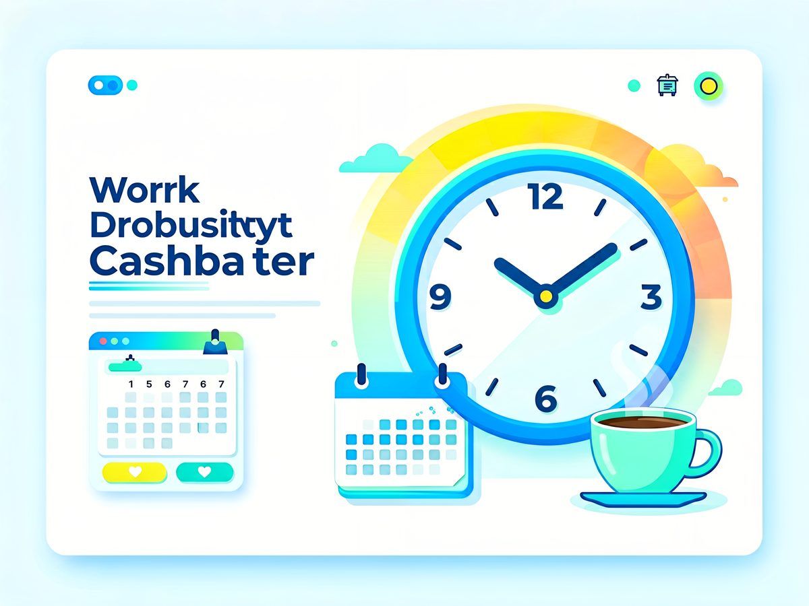

WORK HOURS
工时计算器
输入上下班时间与午休时长，自动计算当日工时、加班时长，并提示是否超过标准工时。
今日结果
总在线时长
9h 0m
上班到下班之间的日历时间。
当日有效工时
8h 0m
扣除午休后的实际工作时长。
加班 / 提前下班
0h 0m
相对标准工时的差值。
当前默认设置：09:00–18:00，午休 60 分钟，标准工时 8 小时。
0h
完成度（有效工时 / 标准工时）
8h
关于工时计算器的常见问题
工时计算器怎么计算加班时长？
加班时长 = 总在线时长 − 午休 − 标准工时。总在线时长是上班打卡到下班打卡之间的日历时间；扣除午休后得到当日有效工时，再与标准工时（默认 8 小时/日）相比，正值即加班，负值即提前下班。
标准工时可以自定义吗？
可以。默认为每日 8 小时（符合中国标准工时制度），支持 0.5 小时为步进调整，996、大小周等排班都能准确计算有效工时与加班时长。
计算结果会保存吗？支持哪些语言？
本计算器为纯前端工具，所有数据只在浏览器本地处理，不上传服务器，打开即用。支持简体中文、繁体中文与 English 三种界面语言，移动端与桌面端均可使用。